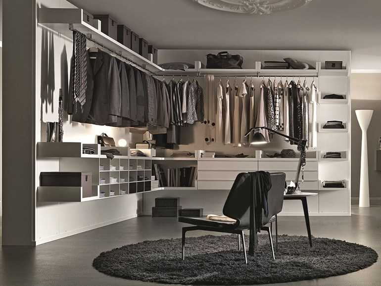

WHAT: En fyr der kaos i sit klædeskab. Han leder febrilsk efter noget. Det er bombet og ustruktureret. Nyt og gammelt er blandet og han taget flere stykker tøj ud. Mangel på plads, struktur og overblik. Han finder gammelt tøj, og sengetøj bliver mast på plads i toppen af skabet.
HOW:Han bliver emre og mere irriteret. Han roder mere, og kaosen er total. Han gør situationen værre, da hans temperament bliver større.
WHY: Hans oplevelse kunne motivere ham til at få styr på sit skab. Han er tydeligvis træt af det rod og uorden, og det ligner ikke at det er første gang han står i den situation.